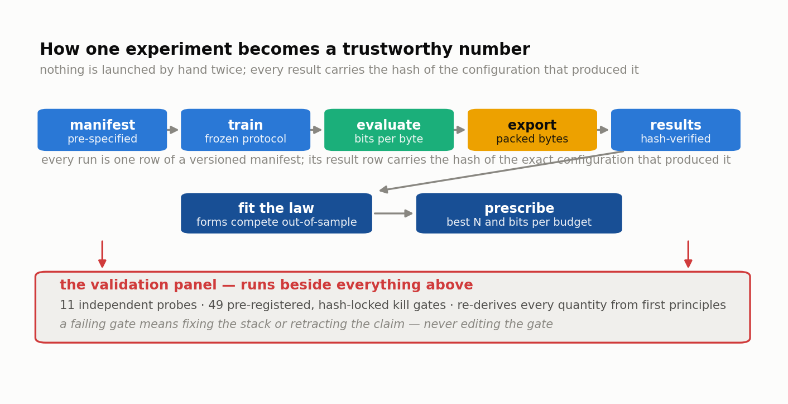

Chapter 11 — Building the Machine#
The rules in Chapter 10 are worth only as much as the machinery that enforces them while nobody is watching. This chapter tours that machinery: the code that turns roughly a hundred and thirty pre-specified experiments into a queue draining itself on one desktop GPU over several weeks. For each piece you get what it does and, more usefully, the single design decision that made it trustworthy — because in almost every case there was an obvious simpler version that would have quietly broken one of the seven rules.
The shape of the problem#
One person. One consumer graphics card at a time. Around 830 GPU-hours of planned training across five phases, plus a cloud allocation capped at $100 for the final validation anchors. No cluster, no scheduler team, no colleague to notice that run seventeen died at 3am.
Under those constraints the pipeline needs three properties at once. Unattended, because nobody can babysit a four-week queue. Resumable, because desktops reboot. And auditable, because months later somebody — quite possibly the author — must prove that the number in row 214 of the results file came from exactly the configuration the manifest specifies.

The contract#
Everything builds against one module, src/logos/config.py. It holds frozen dataclasses — Python objects whose fields cannot change after construction — describing the five precision arms, the shape ladder from 3M to 1.5B parameters, the training configuration, and the RunSpec: one row of a manifest, one experiment, one thing that will happen.
A RunSpec carries a run identifier, size, precision, tokens-per-parameter budget, seed, and optional overrides. It also carries things with nothing to do with science: estimated GPU-hours, estimated dollars, notes, tags, an ops kill-criterion multiplier.
The decision that mattered is how those categories are separated. Each RunSpec produces a config hash, a sha256 fingerprint over only the thirteen science-bearing fields, truncated to sixteen hex characters and logged with every result row.
_SCIENCE_FIELDS = (run_id, size, precision, tokens_per_param, seed,
ffn_type, lr, lr_mult_override, total_tokens,
kv_qat_bits, gqa_ratio, seq_len, batch_tokens)
Cost estimates, tags, and notes are excluded deliberately. Re-estimating a budget after discovering your GPU is slower than you thought must never change a run's identity, because if it did, every re-estimate would orphan the results already collected. The hash is the join key between plan and evidence: given any result row you can prove which manifest line produced it, and given a tampered manifest the cross-check fails loudly.
That sounds obvious once stated. It was not obvious in the first version, and getting it wrong caused a real defect that Chapter 12 tells the story of.
Manifests: nothing is launched by hand twice#
A manifest is a versioned YAML file listing every run in a phase, one RunSpec per entry, with the manifest version, the generating code, and the git commit hash at generation time: manifests/l0.yaml, l1.yaml, l1ctl.yaml, l1lrx.yaml, l2.yaml, and so on.
The loader is strict on purpose. Unknown fields are a hard error rather than being ignored. Types are coerced explicitly on the way in, so a float that YAML rendered as 20 returns as 20.0 and a round-tripped manifest hashes identically to the original. Duplicate identifiers, unknown sizes, and unknown precisions are rejected before anything launches.
The failure this prevents is the most common one in experimental machine learning and it has no dramatic name. You run something from the shell with a flag tweaked. It works. Three weeks later you cannot reconstruct which flag, and the run is either unusable or, worse, usable and wrong. Writing the experiment down first makes the plan a reviewable artifact versioned alongside the code, and reduces the launcher to executing a decision made in a state of calm.
Data: prepared once, replayed identically#
The corpus is FineWeb-Edu, a filtered educational subset of web text, tokenized once with a fixed TinyLlama 32k tokenizer into uint16 shards on disk. The prepared set currently holds 11,365,264,568 training tokens across 114 shards, plus two held-out validation sets of about 23.7M tokens each, kept disjoint so one can serve the fit and the other the validator.
Preparing once is not merely a speed optimization. It makes the data a fixed object that can be hashed, snapshotted, and pointed at from a manifest. When the corpus was extended from an earlier 2.5B-token slice to the current 11.37B, the already-running phase kept working against a frozen view of the old slice via hardlinks and an index snapshot, so runs inside one comparison never straddled two corpora.
The loader (src/logos/data/loader.py) is map-style rather than streaming: it treats the shards as one long array of non-overlapping windows of seq_len + 1 tokens and reads batches by index. Window order is a fixed permutation seeded by (data_seed, epoch), with data_seed frozen at 1337 project-wide.
The decision that mattered: resume is pure index arithmetic. Asking for the batch at global step 4,812 computes the epoch and permutation slice directly and reads exactly those windows, with no fast-forwarding and no hidden iterator state. A run killed at step 4,811 and restarted continues with the identical stream an uninterrupted run would have seen, which is what lets "same data order everywhere" survive contact with a machine that reboots.
Model and quantizers: one place where arms differ#
The model is a Llama-style pre-norm decoder — RMSNorm, rotary position embeddings, grouped-query attention at 4:1, tied 32k embeddings, a SwiGLU feed-forward block — with feed-forward width chosen so non-embedding parameters land near 12 · layers · width².
Every linear layer is built through a single function, build_linear. For bf16 it returns a plain nn.Linear. For a quantized arm it returns ternary BitLinear with the absmean scale, or per-group learnable-scale integer quantization for 2, 3, and 4 bits, which share one code path across all three widths (Chapter 7).
One dispatch point is the whole design. It makes "the arms differ only in linear-layer precision" a structural property of the code that a test can assert, rather than a claim about the author's care.
The trainer, and a bug that hid from its own test#
src/logos/train/trainer.py runs one arm. Single-stage cosine learning rate, warmup at the smaller of 1% of the run or 250M tokens, floor at 0.1× peak. AdamW with betas (0.9, 0.95). Weight decay of 0.1 applied only to 2-D weight tensors — norms, embeddings, and the quantizers' learnable scales are exempt, and tied tensors are de-duplicated by object identity so the shared embedding-and-output matrix is not counted twice. Gradient clipping at 1.0. bf16 autocast on GPU.
Gradient accumulation deserves a note for how it is framed. Splitting a batch into micro-batches is the standard trick for fitting a large effective batch into small memory, and here it is designated the only permitted hardware adaptation. batch_tokens stays frozen across arms; micro_batch_seqs varies with the card, defaulting to 8 sequences, which is what fits a 10GB RTX 3080. Each micro-batch's loss is weighted by its share of the full batch before backward, so the accumulated gradient is arithmetically the full-batch gradient. The science never learns which GPU it ran on.
Checkpoints are written every thirty minutes and on SIGINT, SIGTERM, or SIGBREAK, and they are atomic: written to a temporary file then moved into place with os.replace, so a power cut during a save leaves the previous good checkpoint intact rather than a half-written one. Each stores model and optimizer state, step and token counters, accumulated wall-clock, both CPU and CUDA random-number-generator states, and the config hash. An automatic divergence kill stops a run on a non-finite loss immediately, or on a loss more than 2.0 nats above the best seen for 100 consecutive steps, so a hopeless run does not burn a day of queue time.
Now the bug story, the most instructive thing in this chapter.
The resume path had a unit test. It passed. It ran on CPU, as tests in continuous integration do. The resume code loaded the checkpoint with torch.load(..., map_location=device), which moves every tensor in the file onto the target device — sensible, and exactly right for model weights.
The random-number-generator state is also stored as a tensor. PyTorch requires it on the CPU and set_rng_state raises if handed a GPU tensor. On a CPU-only test map_location="cpu" was a no-op and the state arrived where it needed to be. On a real GPU resume, map_location="cuda" dragged it onto the card and the call blew up. The first genuine GPU resume found it in seconds.
The fix is one method call: torch.set_rng_state(state["rng"]["torch"].cpu()). The lesson is not the fix. It is that a test which cannot reach the failing configuration provides confidence proportional to nothing at all, and that the failure lived in the interaction of two individually correct behaviours. Kill-and-resume is now covered by a bit-exact gate that runs on-device.
Evaluation, export, fitting#
The evaluator computes bits-per-byte (Chapter 3) over held-out shards using non-overlapping windows, scoring every token except the very first exactly once — including the final partial window — then dividing accumulated nats by the natural log of 2 and by the UTF-8 byte count the data pipeline recorded in its index. That byte count is read, never recomputed from text, so the denominator cannot drift between runs. The downstream-benchmark wrapper pins the evaluation harness to version 0.4.9 and refuses any other, because scores from different harness versions are not comparable and a silently mismatched version is worse than no score.
The export stage packs a trained model into a real artifact: ternary weights as 2-bit codes with a per-tensor scale, and 2/3/4-bit weights as exact-width bitstreams with fp32 per-group scales (Chapter 5). This matters more than it sounds. The lazy way to report a footprint is N × bits ÷ 8, which ignores packing overhead, per-group scale storage, and alignment — and it is the number that makes low-bit results look better than they are. LOGOS measures the bytes that actually exist on disk.
The fitting module holds the candidate forms, the robust optimizer, leave-one-size-out selection, bootstrap confidence intervals, and the prescription code that turns a fitted law into the iso-memory frontier and phase diagram of Chapter 9. Chapter 14 is devoted to it.
Queue, budget, and the chain#
Two scripts do the unattended running. scripts/run_queue.py loads a manifest, drops any run that already has a results row, sorts the remainder cheapest-first, then for each one trains, evaluates BPB on both validation sets, measures packed bytes, exports and parity-checks the artifact, and appends a result row. Cheapest-first is deliberate: it maximizes completed, checkable results early, so a systematic problem surfaces after two hours rather than two days.
scripts/chain_queues.py solves the idle-GPU problem. Only one queue can train at a time on a single card, but a finished phase should not wait for a human to notice. The chainer watches a running queue's log for queue drained and starts the next manifest automatically. Because the queue skips runs that already have results, re-running a chain is always safe.
The budget ledger tracks reservations and actual spend against caps that are module-level constants in code, not configuration and not a prompt: per-day, per-phase, and total. A reservation that would breach a cap raises BudgetExceeded and the launch does not happen. Changing a cap therefore requires a code commit with a diff, which is the point. The cloud phase carries a hard cap of $100 against an estimated $92 of on-demand H100 time for five anchor runs.
Ops: agents run the toil, humans run the experiment#
There is an agent layer in three tiers. Tier 1 watches runs and pod state, detects NaN, divergence, stalls, and preemption, raises alerts, and auto-resumes preempted runs from the last checkpoint — fully autonomous, because resume is deterministic and the worst case is a wasted restart. Tier 2 reacts to a completed run by pulling the checkpoint, running the evaluations, logging results, and archiving, within criteria the manifest already defines. Tier 3 launches the next runs when a node frees, inside the ledger, with human approval required above $200 or for any eight-GPU node.
Every mutating action appends to ops/audit.jsonl, and every tier has a plain cron-and-bash fallback so the science never blocks on the agent layer. Tier 3 approval is a file rename: a pending approval is written to disk, and renaming it to .approved is the only thing that counts as consent.
The important line in the runbook is what agents may never do: edit training code, hyperparameters, or manifests, or make fitting and model-selection decisions.
What it costs#
| Phase | Runs | Local GPU-h | H100-h | Cash |
|---|---|---|---|---|
| L0 — crossover and noise floor | 28 | 147 | 0 | $0 |
| L1 — protocol freeze and gap study | 30 | 139 | 0 | $0 |
| L1lrx — learning-rate bracket extension | 12 | 28 | 0 | $0 |
| L1ctl — learning-rate controls | 12 | 24 | 0 | $0 |
| L2 — the grid the law is fitted to | 39 | 529 | 0 | $0 |
| L3 — blind extrapolation anchors | 5 | 0 | 32.9 | $92 |
| L4 — KV cache in the byte budget (Chapter 8) | 4 | 17 | 0 | $0 |
That is roughly 880 local GPU-hours as currently specified against a plan headline near 830, the difference being control and bracket runs added after the fact — which is what an honest plan does when it discovers it needs more evidence. The cloud line is capped by a constant in the ledger. Everything else runs on a card you can buy in a shop.
What to remember#
The machine exists to make the rules of Chapter 10 hold without anyone remembering them: a frozen config contract with a science-only hash tying every result back to the manifest line that specified it, versioned manifests so nothing is launched by hand twice, a corpus prepared once and replayed by pure index arithmetic, a single dispatch point where precision arms diverge, and a trainer that checkpoints atomically and resumes bit-exactly. The recurring pattern is separating what may vary with hardware from what defines the experiment, then making that boundary machine-checkable rather than remembered. The CUDA resume bug is the cautionary tale: two correct behaviours combining into a failure the existing test could not reach, found by the first real GPU restart. About 830 planned local GPU-hours and at most $100 of cloud is not a large program by industry standards, but it is a complete one, and every hour of it is reproducible from a manifest on hardware anyone can own.